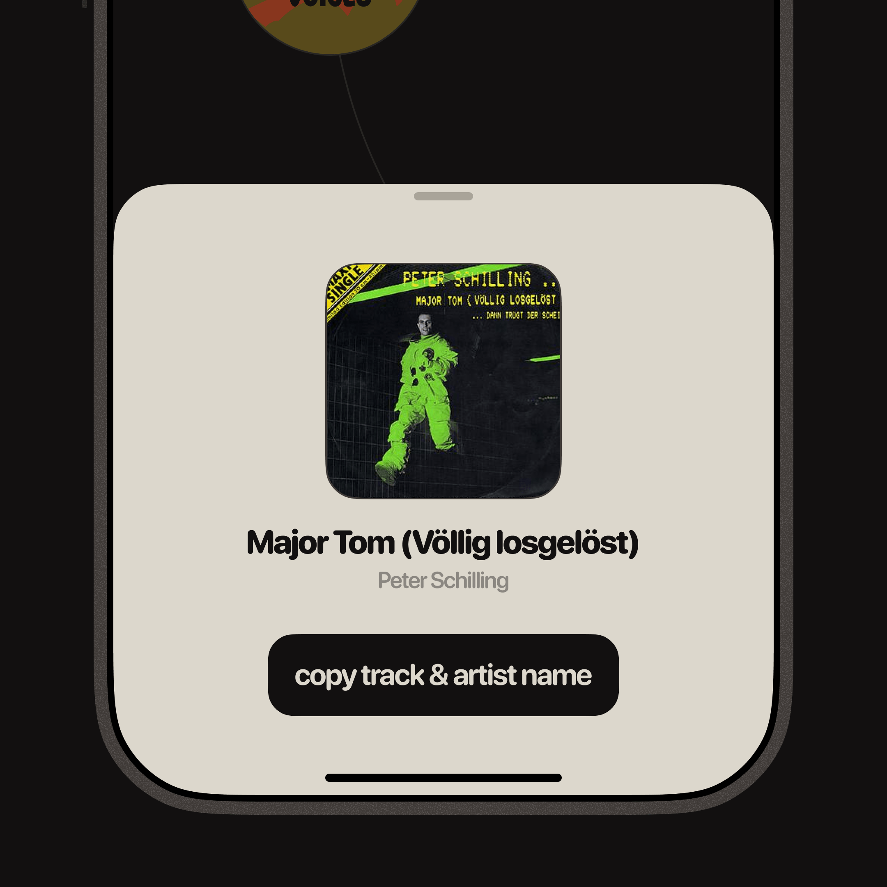
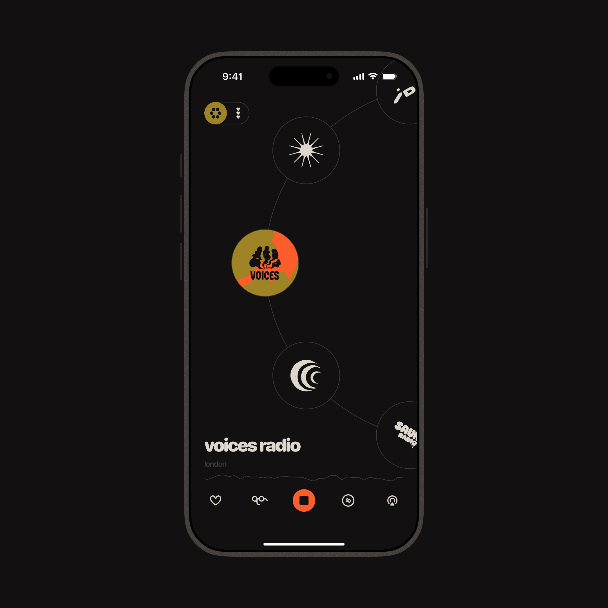
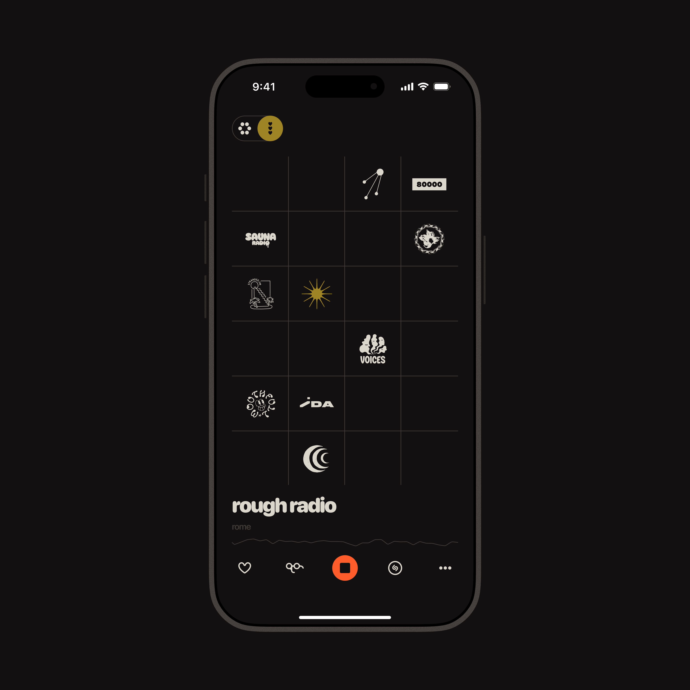
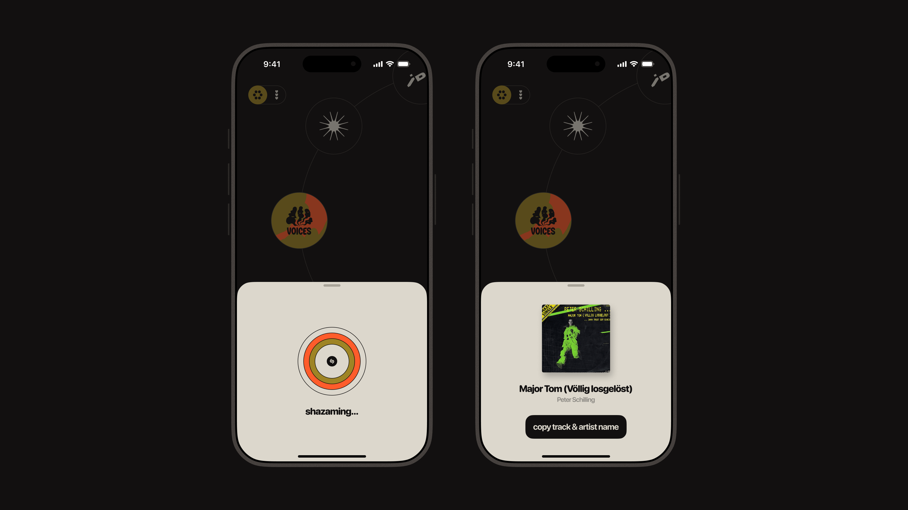
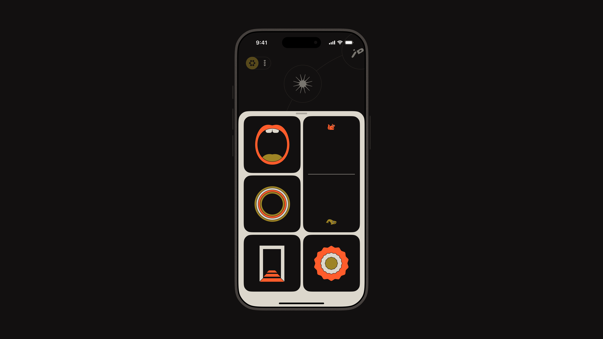

An iPhone app designed and built by me around a simple idea: Enjoy music the old way.
Tune in to a handful independent stations from around the world and hear something new. No algorithms, no skip button, no overwhelming amount of choices. Just live radio, happening right now, with all the happy accidents that come with it.
The song you didn't know you needed. The genre you'd never have searched for. The track you have to Shazam before it's gone.
Available in the App Store soon.


The main view. Tune in to stations with a giant dial and satisfying clicking haptic feedback.

Save your favorite stations to the grid.

Identify songs with the built in Shazam feature. No mic access needed as it jacks in directly to the audio output.

Not your grandpa's old radio. Have some fun and fidget around with live audio effects.